8 Zooarchaeology
Page under construction
The faunal dataset used in this study is both extensive and diverse, containing over 466 records. While NISP is a useful proxy for historical animal farming, it is not without its limitations, as previously discussed in the methods section. What is crucial to emphasize here, however, is the presence of overdispersion within the data, which necessitates more sophisticated and nuanced approaches than simply calculating overall means for each animal species. Overdispersion is a common occurrence when analyzing datasets of this nature, given the unique factors at play in each context, including historical and depositional influences. Nevertheless, data modeling requires simplification and causal reasoning, and the best approach is to start with straightforward models that can account for overdispersion and generate credible distributions. To this end, Bayesian hierarchical models were developed for each chronology, context type, macroregion, and geography. As a further step, an additional analysis was conducted that solely focused on altitude and chronology as predictors. By examining the specific contributions of altitude and chronology in predicting animal farming/consumption patterns, this analysis provides valuable insights that complement the earlier models. These findings underscore the importance of considering multiple factors when studying the probability of occurrence of farmed and wild animals in historical contexts. They also demonstrate the potential benefits of simplified models to focus on key predictors. Moreover, several attempts were made to create a coherent understanding of the likelihood of economically valuable animals occurring during the first millennium, in order to provide a more comprehensive perspective on the role of animal farming in shaping historical societies.
8.1 Data exploration
As previously mentioned, the faunal dataset used in this study exhibits overdispersion, which is a common issue when analysing datasets of this type. The term ‘overdispersion’ refers to the presence of greater variability in the data than expected based on a normal curve (Figure 8.1). In this section, I will present the distribution of the animals of interest to provide a visual representation of the dispersion within the dataset. By examining the distribution curves, we can better understand the variability that exist within the dataset, and can use this information to develop more accurate models. In Figure 8.2, it is evident that the distribution of animal remains in the faunal dataset is not symmetrical and does not conform to a normal curve. This non-normal distribution indicates that the standard measures of central tendency, such as mean and median, may not accurately capture the overall distribution of the data. Traditional statistical measures, such as measures of central tendency and dispersion, are commonly used in frequentist approaches to analyse data. However, these measures may not be appropriate for analysing the complex patterns of animal farming and consumption in the faunal dataset due to the presence of overdispersion. As an alternative, Bayesian multilevel models can account for overdispersion by incorporating appropriate probability distributions, such as the betabinomial distribution.
8.2 Chronology
8.2.1 Trends by century
The proposed model uses a betabinomial distribution to model overdispersion in the data and estimates the precision (or shape) parameter \(\phi\) in the Beta distribution. The \(A\) on the left side of the formula is the outcome variable, which represents the animal NISP count for each observed sample \(i\). The model is intercept-only, meaning that there are no further predictors included in the model. The average probability of success \(\bar{p}_{i}\) is modelled through a logit link function, and is assumed to equal the intercept \(\alpha\). The model is also indexed with \({[Century]}\) so that separate estimates can be obtained for each century (1st BCE to 11th CE).
\[ A_{i} \sim BetaBinomial(NISP_{i}, \bar{p}_{i} , \phi_{i}) \]
\[ logit(\bar{p}_{i}) = \alpha_{[Century]} \]
\[ \alpha_{[Century]} \sim Normal(0,1.5) \]
\[ \phi_{[Century]} \sim Exponential(1) + 2 \] The prior distributions selected for the model are weakly informative. Specifically, the prior chosen for the intercept \(\alpha\) is a normal distribution with a mean of 0 and a standard deviation of 1.5. Given that \(logit(\bar{p}) = \alpha\) is modelled using the logit link, a mean of 0 corresponds to a probability of 0.50 on the logit scale. With a standard deviation of 1.5, the prior is flat and only slightly informative.
As for the shape parameter \(\phi\), the prior was selected to ensure that the parameter was at least 2, which corresponds to a flat distribution. This value (2) was then added to an exponential distribution with rate 1 to produce a weakly informative prior.
A prior predictive simulation (Figure 8.3) shows how when no information is provided to the model, counts on the extremes of the binomial histogram are more likely, while all other counts have similar probabilities. Bimodal priors are common practice with Beta distributions as they are non-informative enough. However, updating a bimodal prior even with one observation rapidly changes the posterior.
The model for pigs’ NISP counts shows a positive trend above the millennium average (0.36) for predicted highest density intervals (HDIs) from the 1st century BCE to the 3rd century CE. The probability intervals exhibit a steady decrease that begins in the 3rd century and continues until the 8th century, when the mean of the probability distribution coincides with the first millennium average. Despite positive trends reported in the 8th and 9th centuries, interpretation of these values requires caution since the credible intervals are wider due to fewer observed samples dated to these centuries. The HDIs mean for the 10th and 11th centuries is again around the millennium average, indicating a decrease in the probability of pig occurrence.
Cattle, on the other hand, exhibit different trends, with a HDI interval in the 1st century BCE above the millennium average (0.20), although with a large credible interval, and a negative trend from the 1st to the 3rd century CE. HDIs are again increasingly positive between the 4th and 7th centuries, but decrease in the 8th century. As for pigs, HDIs means are close to the millennium average in the 10th and 11th centuries.
The modelled probability of occurrence of caprine reveals a positive trend in the 1st century BCE, followed by a negative trend (below the average of 0.28) from the 1st to the 3rd century CE. The probability of occurrence then increases around the 4th/5th centuries up to the 6th/7th centuries, with HDIs stable around the mean from the 8th to the 11th century. The edible wild animals that were included in the analysis are Sus scrofa ferus (boar), Cervus elaphus (red deer), Dama dama (fallow deer), Capreolus capreolus (roe deer), Lepus sp. (hare), Glis glis (dormouse), and unspecified birds. The domestic fowl species that were analysed are Gallus g. (chicken) and Anser A. (goose). Edible wild animals and domestic fowl predicted probabilities are relatively stable trends throughout the analysed period, with HDI means consistently below 0.10. Domestic fowl HDIs remain below the millennium mean of 0.06 from the 1st century BCE to the 2nd century CE, and then increase steadily from the 3rd century to remain around the mean until the 7th century. From the 7th to the 11th century, the HDIs remain positive, but with a much larger credible interval. Similarly, wild animals’ HDIs are positive in the 1st century BCE and remain stable around the millennium average (0.05) until the 6th century CE, after which they also show a slight increase until the 11th century.
In addition to plotting the probabilities of occurrence extracted by the models, the distributions of the precision parameter \(\phi\) are plotted for samples in each century. Each line is plotted with two probability intervals 0.65 (shorter thicker line) and 0.99 (longer thinner line). The probability density functions are also added to the top of the bar.
8.2.2 Trends by phase
The relationship between animal NISP counts and chronological phases is similar to the previous one, but with a different indexing variable for the intercept. Instead of being indexed by century, the intercept \(\alpha\) is now indexed by phase (\({[ChrID]}\)). While a phase can span several centuries, this modification allows the model to estimate separate intercepts for each phase, providing more specific insight into potential differences in the outcome variable and the average probability of animals occurrences over time. The rest of the model structure and distributional assumptions remain the same as the previous model, which uses a betabinomial distribution to model overdispersion in the data and an intercept-only structure.
\[ A_{i} \sim BetaBinomial(NISP_{i}, \bar{p}_{i} , \phi_{i}) \]
\[ logit(\bar{p}_{i}) = \alpha_{[ChrID]} \]
\[ \alpha_{[ChrID]} \sim Normal(0,1.5) \]
\[ \phi_{[ChrID]} \sim Exponential(1)+2 \]
As anticipated, the phase-level trends exhibit posterior distributions similar to the more detailed century-level results. However, the phase-level model offers an advantage - the credible intervals are considerably narrower than those of the previous model. Since each phase spans several centuries, except for the medieval phase that only includes the 11th century, there are more data points available to provide more reliable probabilities. Pigs’ NISP are at their highest point during the Roman phase, whereas they decrease in the Late Roman and Early Medieval phase, only to be slightly below the millennium average (of 0.37) in the 11th century. The predicted millennium average is comparable to the previous century-level model (0.36), with a small difference which can be due to the grouping of the observations. The diachronical means for the other animals are also very comparable to the other with a maximum difference of ±1 for each animal. Cattle’s NISP probabilities of occurrence increase throughout the millennium, although in the 11th century (marked as Ma on the plot) the 99% credible interval is larger, spanning from 0.15 to 0.26. Conversely, the century-level model for this period indicated a small increase towards the millennium average. As for the century-level model, the caprine are the second most represented animal in the millennium. Their probability of occurrence shows HDIs just below the millennium mean (of 0.27) in the Roman and Late Roman age, and positive HDIs values for the Early Medieval and Medieval phase, a situation not so different than the century-level model. The phase-level trends for domestic fowl and wild animals show perhaps clearer trends than the century-level models. The HDI for domestic fowl, which is below the millennium mean of 0.05 in the Roman age, slightly increases in the later phases, with a peak in the 11th century. This peak is however less reliable than other phases, as the credible interval range is much larger. Wild animals posterior probabilities on the other hand are stable around the mean (0.04) with a small increase in probability during the Early Medieval and Medieval phases. In addition to improved credible intervals as opposed to the century-level model, the probability intervals for the \(\phi\) shape parameter are also more reliable, as the PDFs are more narrow and most of the values are around the mean. Unfortunately, a smaller amount of samples for the 11th century produced more dispersed curves.
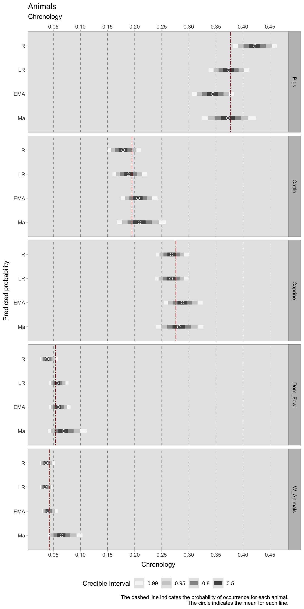

8.2.2.1 Community plot
After estimating the intercepts for each animal separately, they were compiled together to get a cohesive view of the probability of occurrence of the four animals. This approach is not ideal, but it can still be informative with regards to the patterns of animal exploitation in the archaeological record. The joint community plot allows to visually compare the probability of occurrence of each animal species over time and identify trends in their occurrence. For instance, the plot below shows how the predicted probability values for the three main domesticates—pigs, cattle and caprine vary across the four phases. Pigs have higher probabilities during the Roman phase, while already in the Late Roman period they get closer to other domesticates. It is in this period that the inter-sample variability of \(\phi\) seem to decrease, although the values are not very high. The precision \(\phi\) is instead very variable for edible wild animals and domestic fowl, as it can be expected given that it is much rarer to find these animals in a sample for various reasons already discussed in the methods. The high variability in the precision of the medieval (11th century) intercept and \(\phi\) estimates can be explained by the lower number of samples. Overall, the most noticeable trends in the plot are the increased number of cattle in the early medieval period and the decreased number of pigs from the Late Roman phase. Modelling each animal species separately does not fully capture the complex interactions that exist among them, and future work should explore more advanced modelling approaches that account for the co-occurrence of multiple animal species in the same samples.
8.3 Context type
Chronological models offer a broad overview of the trends in animal husbandry and consumption, both domestic and wild. It is essential, however, to consider the contextualization of animal remains since different site types can impact the NISP of a specific animal. Therefore, a detailed analysis of the specific site must be undertaken before any conclusions regarding the NISP of an animal can be reached. When applying the same method as in Chapter 7, we see how direct stratification by site type is not possible because of a backdoor path between Chronology and Site_Type that cannot be ignored. Ignoring chronological differences would imply expecting a rural villa site to have comparable production and consumption patterns in the Roman and Late Roman (or even later) periods. To gain a more comprehensive understanding of how the environment in which animal remains were discovered influences the result variable, NISP, we present the directed acyclic graph (DAG) created for the botanical models. The DAG indicates that we must block by Chronology and stratify the dataset by Site_Type. To accomplish this, we introduce an interaction index (\({[TCid]}\)).
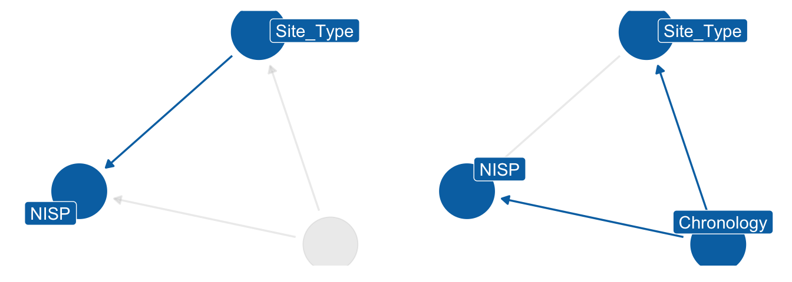
The approach for the proposed model for estimating the posterior likelihood of animal occurrence in various chronological phases and context types is very similar to the models discussed earlier. The only modification is the interaction index. The model structure and priors remain the same as in the previous models.
\[ A_{i} \sim BetaBinomial(NISP_{i}, \bar{p}_{i} , \phi_{i}) \]
\[ logit(\bar{p}_{i}) = \alpha_{[TCid]} \]
\[ \alpha_{[TCid]} \sim Normal(0,1.5) \]
\[ \phi_{[TCid]} \sim Exponential(1) + 2 \]
8.3.1 Pigs
As previously noted, pig remains are consistently the most frequently found type of faunal remains in first millennium Italian excavations. However, this study reveals divergent patterns in the presence of pigs depending on the site type and function. We will first discuss categories with narrower credible intervals before moving on to those with smaller sample sizes and wider credible intervals. Urban sites are the most common category, where the probability of finding pig remains follows patterns similar to the chronological trends presented earlier. During the Roman phase, the probability of finding pig remains in urban contexts is very high compared to other animals or categories, with a mean probability of almost 0.5. The consumption of pork in cities appears to have decreased during the Late Roman and Early Medieval phase, with similar credible intervals, only to increase again in the 11th century. Possible hypotheses will be discussed later on. Although the precision of the pig beta posterior in urban contexts is slightly below the across-contexts mean of 5, the curves are not too dispersed, at least in the Roman and Late Roman periods, and we can be confident in these results. On the other hand, the 95% HDIs for pigs in rural contexts are lower than those in urban contexts during the Roman and Late Roman periods. In the Early Medieval phase, the mean probabilities are comparable to urban contexts, with both categories having a mean of around 0.31, which then increases to 0.37 in the 11th century (0.39 in urban contexts). In general, while the decline in pig presence appears to be significant in urban areas, rural contexts exhibit only a slight increase. Rural villas have been analyzed separately from other rural sites due to their potential implications for the production and consumption of meat, given their status as elite sites. Although the sample size is not large enough to provide highly confident posterior predictions, the results suggest that pork was likely an important component of the diet in these sites, with a mean of approximately 0.4 in the Roman period and an increase in the Late Roman phase. However, the Early Medieval phase is characterized by greater uncertainty, as the sample size is reduced and rural estates often changed function or were abandoned. The credible interval for this period ranges from 0.25 to 0.62. The suggested increase in pigs NISP in the Late Roman period will be discussed further later, as the historical debate might provide helpful hypotheses. It is worth noting that there is no sample from the 11th century for rural villas, which is why that line is not included in the graph. Fortified sites were also large consumers of pigs, with the probabilities of occurrence sticking around the mean value and a minor increase in the Early Medieval-Medieval periods. However, there are no significant changes in trends to observe. The probabilities of occurrence in the Late Roman phase are not so trustworthy as the credible interval is large. It is worth noting that there is no Roman posterior prediction on the graph because there were not fortified Roman sites in the sample except for one, the castrum of Ostia (MacKinnon, 2014), which has not been included in the observed data for this model as it was one single sample. The castrum had a 71.9% NISP proportion of pigs, out of a sample of 121 total NISP. The religious category has fewer observations than the site types presented before, and the credible intervals are wider. The Roman and Late Roman religious sites mostly include temples such as the temples C and D of Grumentum, the Demetra temple in Macchia delle Valli, the Mithraeum of Crypta Balbi, and more. In the Medieval phases, religious sites are mostly monasteries including the well-studied ones of Monte Gelato, Farfa, San Salvo, S. Giulia of Brescia, and San Vincenzo al Volturno. The range of credible intervals can span probabilities of 0.40, so we must be cautious in our considerations. If we look at the mean of the HDIs, a precise pattern does not emerge. However, in every chronology, the probability of occurrence of pig’s NISP is over the across-contexts average of 0.41. The credible intervals for necropolis sites are too large - spanning almost the entire probability range - to trace any clear patterns. With only nine samples from seven sites, including the Roman and Late Roman necropoleis of Cantone, Otranto, San Cassiano (Riva del Garda), Trieste (loc. Crosada), Poggio Gramignano, San Lorenzo di Sebato, and the Early Medieval necropolis of Baggiovara, the sample size is small. As a result, it is best to draw only qualitative conclusions in the later discussion. Finally, the last category includes only one well-known site, the Flavium amphitheater in Rome, which provided 29 zooarchaeological samples. The 95% HDIs for this site show very high probabilities, with mean values of 0.65 for the Roman and Late Roman periods and 0.49 for the Early Medieval period. However, the credible interval is quite wide for the Early Medieval phase, making it less certain. This type of site was not grouped with the other urban observations as it was too unique.
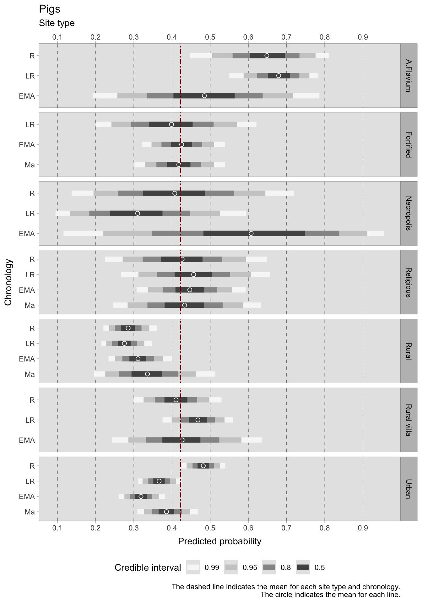
Pigs are recognized as indicators of urban environments since pig rearing is primarily for meat production. This dataset contains numerous samples from Rome and Ostia, which is its neighboring port city. It is possible to model the “metropolitan” influence that these cities may have on the probability of discovering pig remains in urban areas. By doing so, we can calculate the differences in probabilities between Rome and other urban sites to gain insights into their varying likelihoods. Results show how pigs were more markedly present in Rome than other Italian urban centres, although they follow the same chronological decreasing trend as other cities.
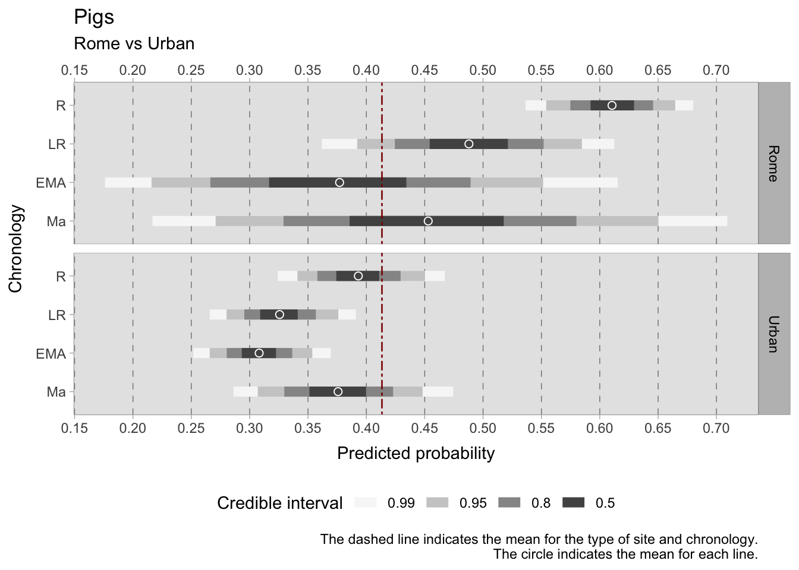
The number of samples from Early Medieval and Medieval (11th century) Rome is relatively small compared to other urban centers. Additionally, considering the historical context, the metropolitan effect of Rome is likely diminished during this time period. Therefore, the differences in probabilities were specifically computed for the Roman and Late Roman phases, focusing on these particular periods rather than encompassing the broader historical range. In the Roman phase, there is a bigger difference between Rome/Ostia and other Italian cities (with a mean probability of 0.20). Later, this difference decreases to a mean of 0.15.
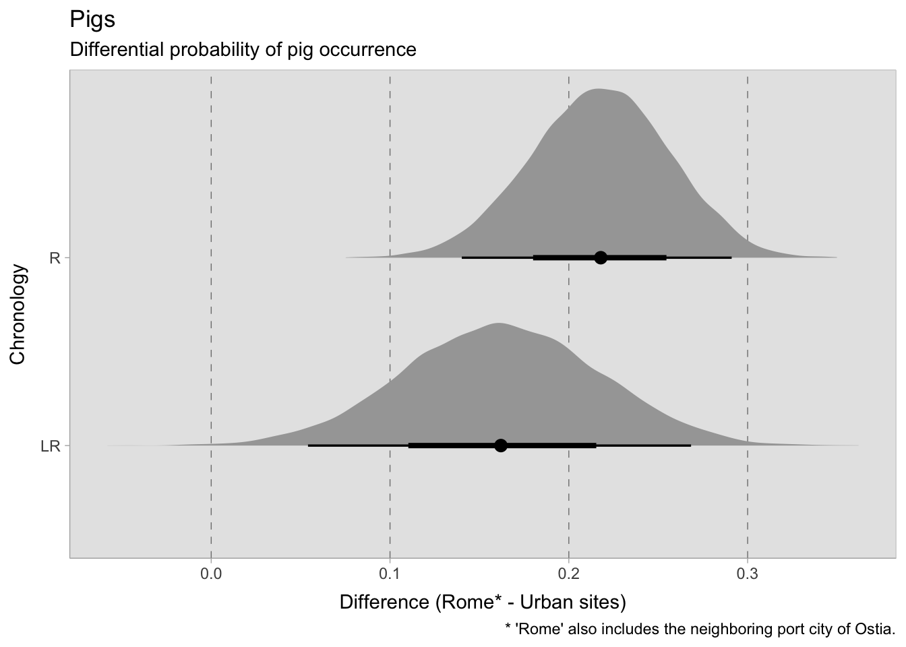
8.3.2 Cattle
The probabilities of occurrence of cattle remains in different context types have thinner credible intervals compared to pig remains credible intervals. In urban sites, no significant changing pattern can be observed, as the means of the 95% HDIs mostly lay on the mean probability of 0.20 across contexts, with the exception of the Roman period where it was below mean. Medieval urban sites exhibit increased variability, possibly due to higher uncertainty associated with less data. The mean precision (\(\bar{\phi}\) = 7 ca.) in medieval urban sites is the highest of any category. Rural contexts show more variability in probability trends and are more in line with the results of the chronological models. The credible intervals are slightly wider than urban contexts, but can still be interpreted and discussed later. In the Roman age, the probability of cattle occurrence is highest in rural sites, increasing after the 2nd century and slightly decreasing in the Medieval phases. Rural villas show stronger trends than rural sites, but with even more uncertainty. If in rural sites probabilities of occurrence of cattle NISP remains increases in the Late Roman period, in villas there is an opposite trend with cattle probabilities going below the mean. As previously mentioned, data on Early Medieval rural villas are scarcer due to the changing functions of these sites and their lower continuity. Only six sites provided nine samples in this period: Ficarolo (loc. Gaiba-Chiunsano), Monte Torto di Osimo, Santa Marta, Villa Magna, S. Giovanni di Ruoti, and Faragola. Consequently, the resulting analysis for this category has higher uncertainty and wider credible intervals. However, the probabilities suggest a small increase again in this phase. The posterior precision parameter (\(\bar{\phi}\)) in this phase is the lowest, indicating both less data available and contradictory information in the data, contributing to the uncertainty. Fortified sites, while exhibiting more uncertainty during the Late Roman period, do not show significant changes in cattle NISP occurrences. The mean values of the 95% HDIs remain consistently above the overall mean of 0.20 in all chronologies, but only show a slight increase to around 0.25 in the Medieval period, with a higher precision. The trends in religious sites show similarities to those in villas, with mean probabilities dipping below the across-contexts average in the Late Roman period and a steady increase in the Early Medieval and Medieval phases. In necropoleis, the probabilities of cattle NISP are below the mean in the Roman-Late Roman periods. However, in the Early Medieval phase, due to limited data availability (only one sample from the necropolis of Baggiovara, where cattle NISP is 74/316), the uncertainty is high, and the credible interval is too wide to draw any meaningful conclusions. This extended credible interval is due to the flat prior, indicating that the model is too uncertain to provide reliable probabilities. The final category consists of only one site, the Flavium amphitheater. The probability of occurrence of cattle NISP remains in this category is relatively low and does not follow the same patterns as urban sites. There is a small decrease in the Late Roman period and a potentially uncertain increase in the Early Medieval phase. However, the 50% HDI probabilities are consistently below the across-contexts mean.
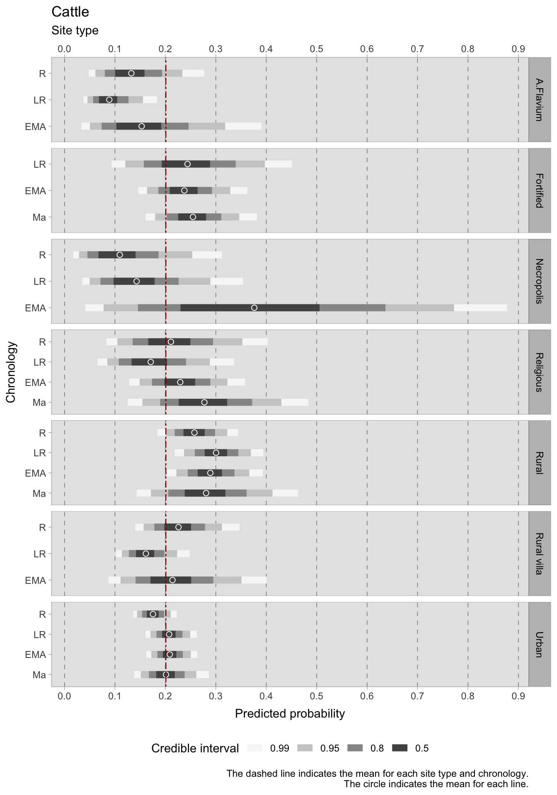
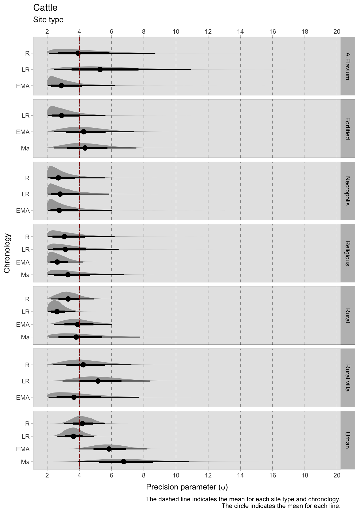
If pigs can act as a marker of urbanization, it is also important to investigate whether the consumption patterns of other animals in Rome differ from those in other urban centers. Additionally, while pigs were primarily raised for meat consumption, cattle had further purposes beyond meat production (e.g. agricultural purposes, leather production, etc.). To overcome this issue, it would be ideal to control for factors such as age and wear, even though this is outside the boundaries of this research and biometric data is not stored in the database. It is essential to keep this context in mind when interpreting the graphs and drawing conclusions. In contrast to pigs, the analysis reveals notable distinctions in cattle consumption trends between Rome and other urban sites across different chronological phases. One notable observation is that cattle appears to be more commonly consumed in other urban cities compared to Rome. Additionally, while cattle consumption decreases in Rome during the Late Roman period, it concurrently increases in other cities. It is worth noting that the credible intervals in Rome are relatively high, limiting further comparisons in other periods. However, there seems to be a positive trend again in the early medieval phase. The graph depicting the differences illustrates a narrower gap between Rome/Ostia and other cities during the Roman period, whereas the disparity becomes more pronounced in the Late Roman phase.
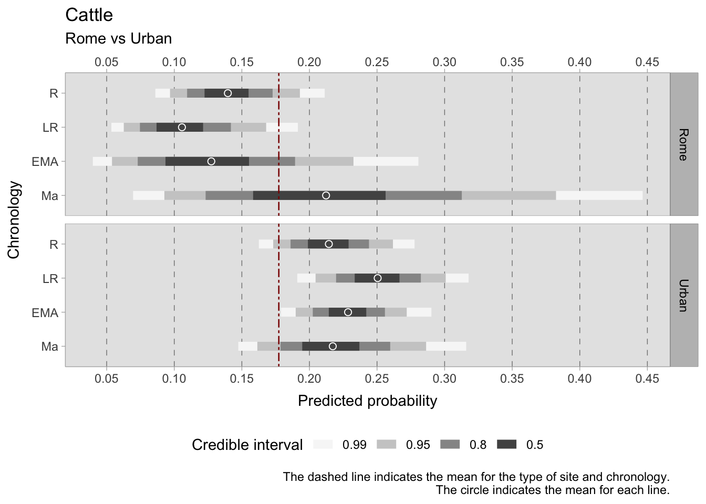
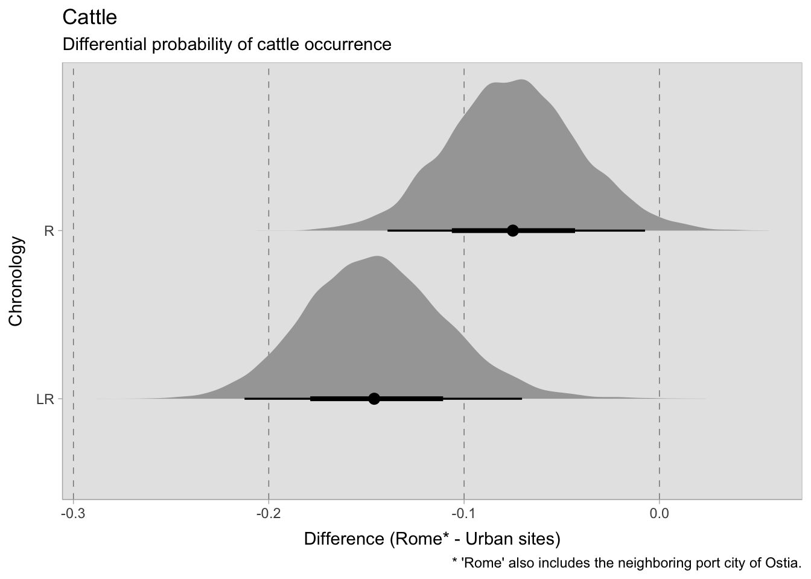
8.3.3 Caprine
Among the contexts analyzed, the probability of finding caprine remains is the second highest with a mean of 0.29, following pig remains. In Roman and Late Roman urban sites caprine probabilities are below the mean, although there is a positive trend until the Early Middle Ages. The Medieval phases (6th to 11th century) show mean probabilities of 0.31. Rural sites exhibit a decreasing trend, with the 50% HDIs always above mean. However, even with this decreasing trend, the probabilities in rural sites are still higher than those in urban sites. In the Roman period, the caprine probability of occurrence is particularly high (0.35) in rural sites and decreases in the following phases, until the 11th century, when there is a strong increase in caprine probabilities (associated with more uncertainty and variability). Rural villas show a decreasing trend in the probabilities of caprine remains: the 50% HDI probabilities in rural villas remain lower than the average, with a slight decrease in the Late Roman phase and a strong increase in the Early Medieval period, when uncertainty is also high. Although the number of samples is not as high as other categories, the mean precision (\(\bar{\phi}\) = 8.5 ca.) is high in the Late Roman phase, indicating consistency in the samples. In fortified sites, there is a decreasing trend in caprine probability, starting from a high point of 0.37 in the Late Roman phase and reaching below the average of all contexts in the 11th century. As for the case of most categories (except urban sites), there is a decreasing trend in caprine probability until the 11th century in religious sites. However, for this category the credible intervals are quite wide, and the precision is always below average, making it challenging to draw reliable conclusions. In the case of necropoleis, the credible intervals are too large to provide any meaningful insight. Finally, in the Flavium amphitheater samples the 50% HDIs probabilities are below average, decreasing in the Late Roman period and increasing (with extreme uncertainty) above average in the Early Medieval phase.
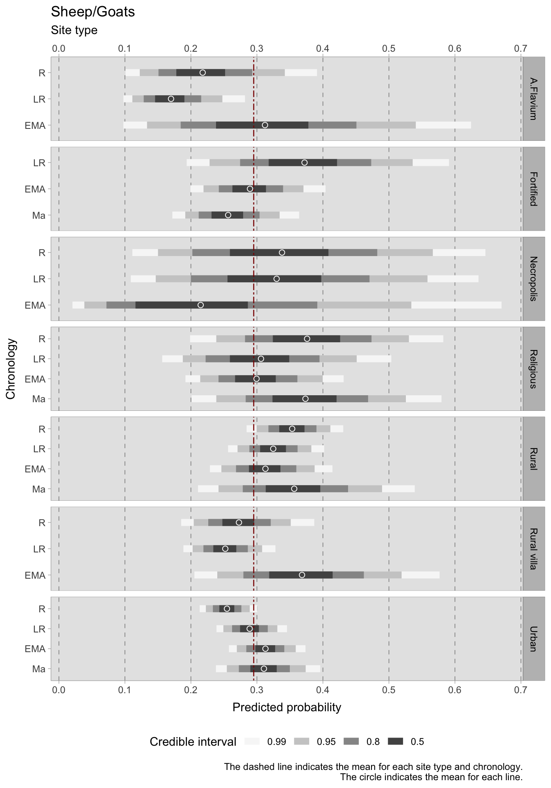
Regarding sheep and goats, similar differences were calculated between Rome/Ostia and other urban sites. The overall chronological trends in urban sites do not exhibit significant variations, while Rome and Ostia show an increasing trend, although with a larger credible interval after the Roman period. In this case as well, the differences in probabilities of finding sheep/goat remains in Rome/Ostia versus other urban sites are negative, suggesting that these animals were consumed more in other cities than in the capital. However, during the Late Roman phase, the mean probability approaches zero.


8.3.4 Edible W. Animals
The trends in edible wild animals are similar between urban and rural sites, with mean probabilities below the average of 0.07 during the Roman and Late Roman periods. The means for urban sites are around 0.03, while those for rural sites are approximately 0.05. In the Early Medieval period, both urban and rural sites show a small increase, with probabilities of 0.05 and 0.06, respectively. In the Medieval period, the 50% HDIs are above the mean for both urban and rural sites, reaching a peak of 0.11 in rural areas. However, caution is required for the 11th century, as the credible interval is larger and the mean precision (\(\bar{\phi}\)) is low, indicating increased variability. While the credible intervals are wider, rural villas consistently have means above the average and higher than other site types. In the Roman period, the mean probability is 0.11, which decreases to 0.09 in the Late Roman phase and 0.05 in the Early Middle Ages. Similarly, fortified sites display 50% HDIs above the across-context mean, with a small decrease in the Early Medieval phase and an increase in the 11th century. Both sites show a positive correlation between game consumption and elite lifeways. Religious sites show probabilities above the mean in the Roman and Late Roman periods, when these sites mostly include temples or ritual contexts. However, in the Medieval phases, the probabilities decrease below the mean instead. The credible intervals for the necropoleis are too wide to draw any reliable conclusion, but it is noteworthy that there is evidence of wild game consumption in these contexts. The Flavium amphitheater also exhibits probabilities below the mean, although the full credible interval extends above the mean as well. In the Early Medieval phase, the mean probability rises above 0.10, but the credible interval remains too wide for confident interpretation.

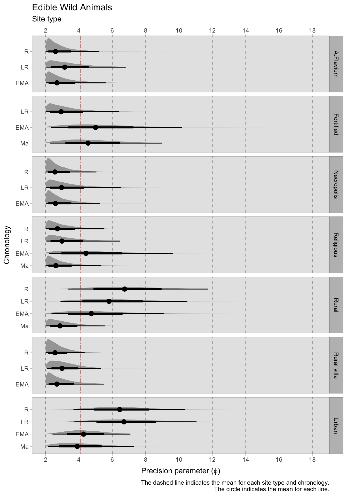
8.3.5 Community plot
To examine the overall trends across all context types and chronologies, the probabilities of occurrence for the four animals were compiled and plotted against the precision. The resulting plot shows different context types and chronologies for each animal. Since these are separate models, multinomial regressions would be informative in this sense. These models could be explored further in future research. In the Roman period, the probabilities for pigs and wild animals show clear separation among urban, rural, and villa sites. Pigs are mostly predicted in urban sites, followed by villas and rural sites. Conversely, wild animals have higher probabilities in villas, then rural and urban sites. For pigs, most of the \(\phi\) values range between 3 and 8 across all contexts, while the wild animals model shows low precision values for villas and greater variability in urban and rural sites. Additionally, wild mammal probabilities in villa sites vary widely, ranging from 0.05 to as high as 0.20. In contrast, the probabilities of wild mammal occurrence in urban and rural sites are more consistent. The probabilities of cattle and caprine in different contexts are less clear. Rural sites have higher probabilities for both animals than urban sites, and the probabilities for villas have wider ranges. However, adding a fourth site type in the Late Roman period complicates the reading. As for the Roman period, pigs and wild animals show a separation, with pigs being more likely in urban sites and wild animals in villas, but there is a shift in probabilities in the Late Roman period. Pigs are now more likely in villas, whereas wild animals remain similarly distributed. Fortified sites have variable probabilities for all animals. Cattle is more present in rural sites, followed by urban and villa sites, while caprine is most likely to occur in fortified sites (with high variability), followed by rural, urban, and villa sites. The latter show a higher degree of precision. In the Early Medieval period, there is less distinction between the different context types for all animals, except for cattle, which is more likely to occur in rural sites, followed by urban and villa sites. There are no clear trends for the other animals. In the 11th century, there is a lot of variability for all animals, possibly due to the smaller sample size. Pigs appear to be more common on urban and fortified sites, while cattle and caprine are more likely to occur on rural sites. The patterns of probabilities for wild animals are highly inconsistent.
8.4 Macroregion
We aim to investigate whether there are differences in the relative amount of NISP data among Southern, Central, and Northern Italy during various chronological periods. Building upon the methods utilized in Section 7.4, we construct a DAG that highlights the necessity of blocking by Chronology and stratifying by Macroregion, in a similar manner to the previous analysis.
To account for the double stratification by Chronology and Macroregion as categorical predictors, an interaction index must be used, just as in the previous model. This allows to stratify the data by both variables and generate distinct intercepts for each combination of the two predictors. The interaction dummy index (\({[REGid]}\)) will determine the variation in intercepts (\(\alpha\)) across different macroregions and chronologies. The \(\phi\) parameter indicates the precision in the Beta distribution, modelled by chronology and macroregion.
\[ A_{i} \sim BetaBinomial(NISP_{i}, \bar{p}_{i} , \phi_{i}) \]
\[ logit(\bar{p}_{i}) = \alpha_{[REGid]} \]
\[ \alpha_{[REGid]} \sim Normal(0,1.5) \]
\[ \phi_{[REGid]} \sim Exponential(1)+2 \]
8.4.1 Pigs
The credible intervals of the resulting probabilities of pig occurrence show variability, making it challenging to describe the results. However, some observations can still be made. Firstly, it’s noticeable that Southern and Central Italy share similar trends, albeit with different estimated probabilities. In the Roman period, Central Italy has the highest 95% HDI for pigs, with a mean probability of 0.51, well above the across-regions mean of 0.36. Although 50 out of 99 samples from this period are from urban contexts, the 30 samples from rural contexts are sufficient to avoid suspicions of biases. Similarly, the credible interval is wider in Southern Italy, with a mean probability of around 0.43. For both regions, the trend shows a decreasing probability of pig occurrence in the Late Roman and Early Medieval periods. In Central Italy, the 95% HDI mean values reach the across-regions mean in the Early Middle Ages, while in Southern Italy, most probabilities are already below the mean in the Late Roman period. The analysis reveals a different pattern for Northern Italy compared to Southern and Central Italy. The probability of pigs in Northern Italy shows only a slight decrease in the Late Roman period, from 0.27 to 0.26. However, there is an apparent increase in the probability of pigs during the Medieval phases, although the 11th century remains uncertain due to limited observations. Conversely, in Southern and Central Italy, the trend is decreasing in the Late Roman and Early Medieval periods. While the 11th century shows a slight increase in both regions, the credible interval for Southern Italy is too wide to draw any meaningful conclusions.
8.4.2 Cattle
Similar patterns are observed for the occurrence probabilities of cattle in Southern and Central Italy. In the Roman and Late Roman periods, the 50% HDIs for Southern and Central Italy are lower than the across-regions mean of 0.23. However, in the Early Middle Ages, the probabilities increase in both regions and go above the mean. In contrast, Northern Italy shows much higher mean probabilities in the Roman (0.27) and Late Roman (0.32) periods compared to the other regions, but the mean decreases to 0.24 in the Early Middle Ages. Due to wide credible intervals, it is difficult to provide accurate estimates for the 11th century.
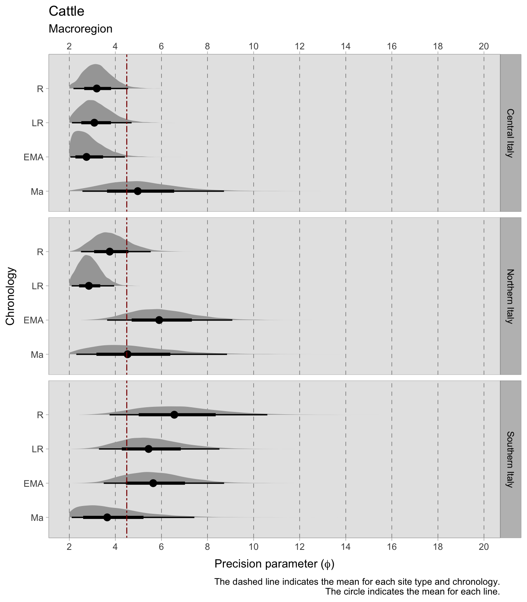
8.4.3 Caprine
There are distinct patterns in caprine occurrence probability across the three regions examined. In Central Italy, the probability of caprines is consistently lower than the across-regions mean of 0.31, ranging from 0.24 to 0.26 in the Roman age to the Early Middle Ages. While the 11th century credible interval is wide, most probabilities are above the mean. The model precision is particularly good in Roman and Late Roman Central Italy, with a peak of around 8. Roman Northern Italy has the highest probability of caprine occurrence in the Roman age, with a mean value of 0.36. However, after this period, the mean probabilities decrease below the mean, only to increase again in the 11th century. Nevertheless, the probability distribution for this period is not reliable. Southern Italy, on the other hand, shows a steady increase in probability from the Roman age, with the 50% HDI around the mean, to a peak of 0.41 in the Early Middle Ages. However, the wide credible interval and low model precision in the 11th century prevent definitive conclusions.
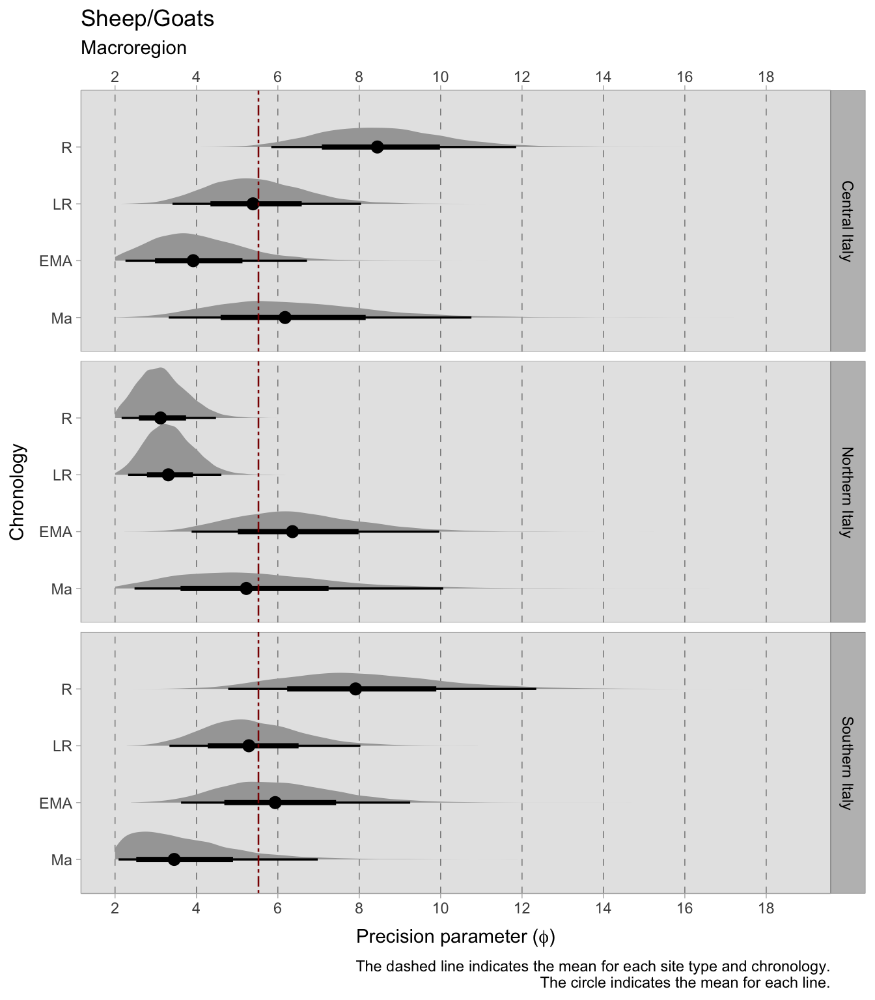
8.4.4 Edible W. Animals
The distribution of edible wild animals in the Roman and Late Roman periods is below the across-regions mean of 0.05. In Central Italy, there is an increase in the probability of game consumption from the Roman to the Medieval age, with an uncertain trend in the 11th century. The precision parameter \(\bar{\phi}\) is also high in the Medieval phase. Similarly, Northern Italy shows an increase in the probability of game consumption in the Medieval phases, while the mean probabilities decrease after the Roman age. Southern Italy, on the other hand, has a stable trend from the Roman to the Early Medieval period, with an uncertain increase in the 11th century. The credible interval is wide, and the model might have produced estimates in agreement with the other regions. However, there is evidence of an increase in game consumption in the 11th century in every macroregion.
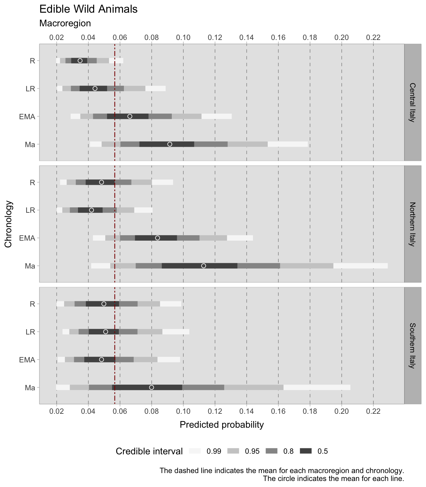
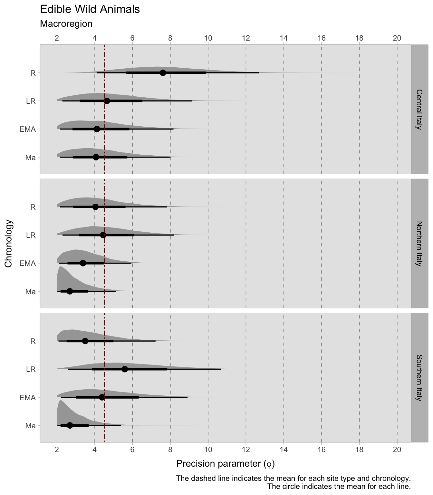
8.5 Geography
Animals distributions can vary across different geographical features. This research has considered plains, coasts, hills and mountains as the most common geographical features in the Italian peninsula. The majority of excavations that returned faunal samples are located at low altitudes. Although - as can be expected - Northern Italy provided more samples from mountain sites when compared to the other parts of mainland Italy, the other samples seem to be evenly located on on plains, coastlands and hills.
The proposed model includes two categorical predictors—Chronology and Geography. As for the previous cases, the interaction between the two variables is obtained through a dummy index (\({[GEOid]}\)) that is used to estimate intercepts for each period and geography. The remaining parts of the model are the same as before. Geographical features can influence the differential distribution of animals: one for instance can expect more caprine NISP remains in mountain sites, but it is also important to stratify by Chronology as certain political event can change the settlement patterns and economic strategies.
The proposed model includes two categorical predictors: Chronology and Geography. The interaction between these two variables is obtained through a dummy index (\({[GEOid]}\)) that is used to estimate intercepts for each period and geography. Geographical features can influence the differential distribution of animal remains. For instance, we might expect to find more caprine NISP remains in mountain sites. It is however also important to consider the time factor, as changes in settlement patterns and economic strategies over time may have been driven by political events. We do this by stratifying again by chronology in addition to geographical features. The priors used for this model are the same as in the previous models.
\[ A_{i} \sim BetaBinomial(NISP_{i}, \bar{p}_{i} , \phi_{i}) \]
\[ logit(\bar{p}_{i}) = \alpha_{[GEOid]} \]
\[ \alpha_{[GEOid]} \sim Normal(0,1.5) \]
\[ \phi_{[GEOid]} \sim Exponential(1)+2 \]
8.5.1 Pigs
The data suggests that the probabilities of finding pig remains are generally higher in lowland areas, including coasts, plains, and hills, with mean probability values above the overall mean of 0.35 during the Roman period. However, there appears to be a general decrease in the 95% HDIs during the Late Roman period, with the decline being more pronounced in plains where the mean probability drops from 0.49 to 0.34. In plains, probabilities increase above the mean only in the 11th century, whereas on coastal sites, the credible interval becomes wider in the 11th century, and the mean remains below the average. Although the association between hills and pig remains probabilities seems to be always above average, there are no major patterns of chronological change. In mountains, pig remains are always below the mean, but there seems to be an increase (associated with a good amount of uncertainty, as indicated by the low precision parameter and wide credible interval) in the Early Medieval Age. Unfortunately, no clear indication can be given for the Medieval phase on mountains, given the wide credible interval that spans the entire probability range. This is due to the limited availability of samples for this period and geographical feature: the castrum of Rocca di Asolo (pigs NISP: 220/698 and 529/1837), the Toblburg Castle (94/346) and Rocchetta Nuova of Vacchereccia (60/258).
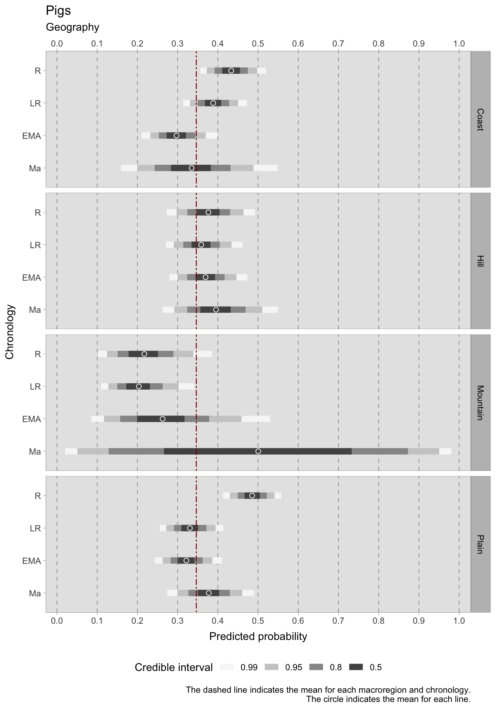

8.5.2 Cattle
In this model, the overall predicted probabilities of cattle are consistently lower than those of other animals, with an average of 0.25. However, mountain sites show a higher mean probability for cattle compared to other geographical features. On the coasts, there is a chronological increase in cattle probabilities, with a mean value going above the overall mean in the 11th century, albeit with higher uncertainty due to the fewer available sites. Conversely, on hills and plains, the probabilities of cattle increase only slightly. What is particularly noteworthy is the trend observed in mountain sites, despite the higher uncertainty due to the lower number of available sites. Here, there is an increase in probabilities during the Late Roman period, from a mean of 0.25 to 0.35, followed by a decrease in the Early Medieval period, although with a wider credible interval. In the 11th century, the credible interval again spans across the entire probability range, with no clear indication of the trend. Four samples from three sites are available for this period: the castrum of Rocca di Asolo (cattle NISP: 265/698 and 395/1837), the Toblburg Castle (204/346) and Rocchetta Nuova of Vacchereccia (120/258).
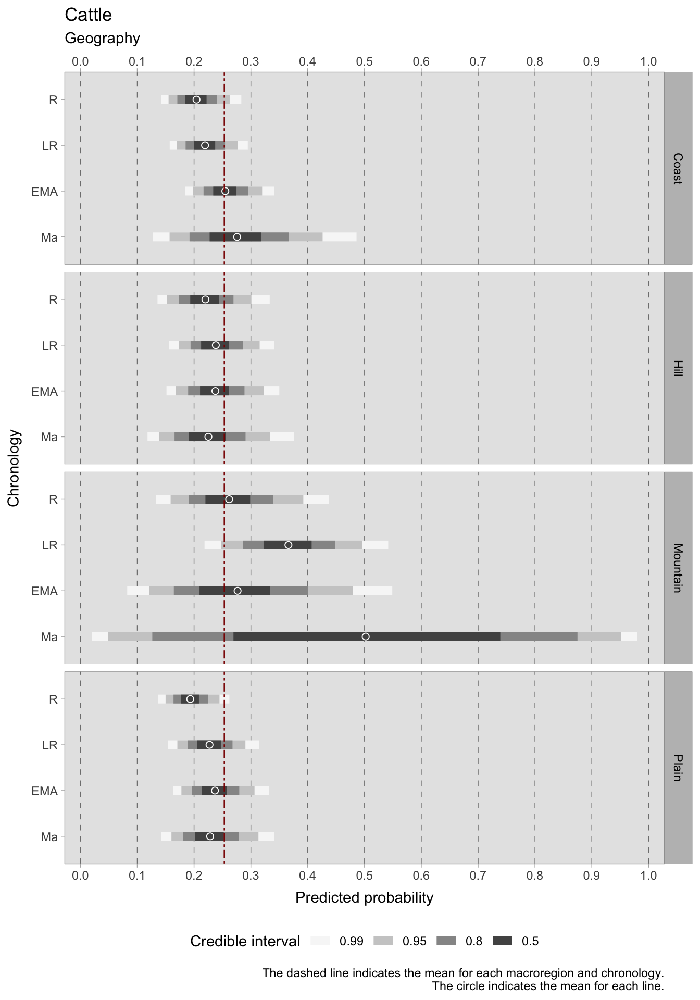
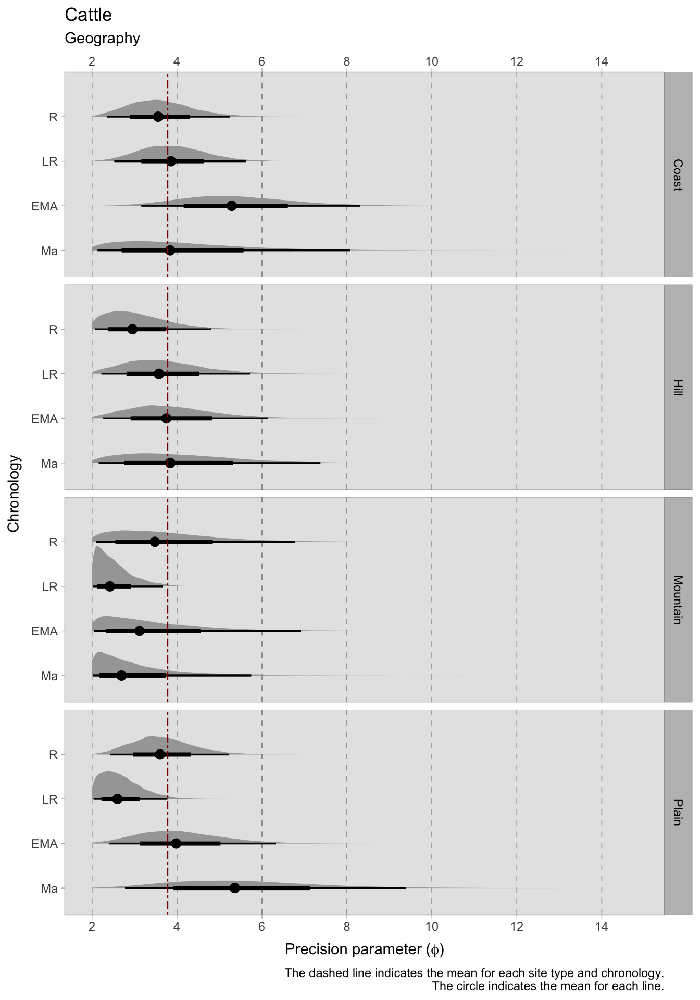
8.5.3 Caprine
The average probability for the occurrence of caprine remains is 0.34 across all geographical features. On coastal sites, the mean probabilities are below average in the Roman-Late Roman periods, but increase slightly in the Early Medieval phase and go above mean in the 11th century, although the credible interval is high and the \(\bar\phi\) is below mean. This increase is also seen on hills, where mean probabilities are below mean until the Early Medieval phase and decrease slightly below mean again in the 11th century. On plains, the mean probabilities are always below mean - as can be expected - but generally increase. Credible intervals for mountain sites are very wide, and thus require caution in interpretation. The general trend seems to be in decline from the Roman to the Early Medieval phase from a mean of 0.55 to 0.45. Again, it is impossible to draw conclusions for the 11th century phase on mountains as only four samples from three sites are available: the castrum of Rocca di Asolo (caprine NISP: 164/698 and 523/1837), the Toblburg Castle (48/346) and Rocchetta Nuova of Vacchereccia (68/258).
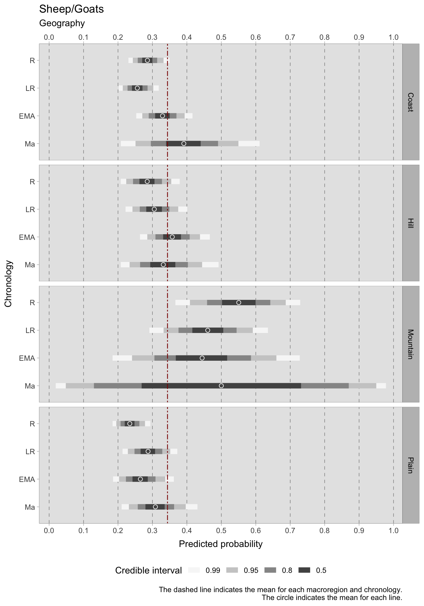
8.5.4 Edible W. Animals
NISP from wild animals is always low, and the probabilities of occurrence show little variation, as most mean probability values lay around the mean of 0.09. Overall, there is a positive association between 11th century sites and game consumption in all geographical features. On plains, mean probabilities are above mean already in the Early Medieval period. Again, it is hard to draw conclusions for medieval mountain sites as there are only four samples available: the castrum of Rocca di Asolo (NISP: 12/698 and 39/1837), the Toblburg Castle (0/346) and Rocchetta Nuova of Vacchereccia (0/258).
8.6 Altitude
The probability of occurrence of the most common faunal remains can be modelled against the elevation of sites in the four time periods under consideration. It is worth noting that the sites where the zooarchaeological remains have been found are not evenly distributed. In the Roman age, most sites investigated are located between 0 and 100 MSL, whereas after there is an increasing number of remains from sites between 100 and 400 MSL. Whether this reflects a real shift in settlement patterns is outside the aims of this study, but it might still be informative to visualise the different distribution of sites across elevations.
The proposed model to estimate the probability of occurrence as related to the altitude (the slope \(\beta\)) and chronology (\({[ChrID]}\)) uses a betabinomial distribution to model overdispersion in the data. The \(A\) on the left side of the formula is the outcome variable—the animal NISP counts for each observation \(i\). This is a simple intercept with slope model, where the intercept \(\alpha\) carries an index \({[ChrID]}\) as the model provides estimates for each chronology under examination. A single \(\phi\) parameter indicates the precision in the Beta distribution. The DAG for this model has not been repeated as it is identical to that in Figure 7.26.
\[ A_{i} \sim BetaBinomial(NISP_{i}, \bar{p}_{i} , \phi_{i}) \]
\[ logit(\bar{p}_{i}) = \alpha_{[ChrID]} + \beta_{[ChrID]}\cdot Alt_{i} \]
\[ \alpha_{ChrID} \sim Normal(0,1.5) \]
\[ \beta_{ChrID} \sim Normal(0,1.5) \]
\[ \phi \sim Exponential(1)+2 \]
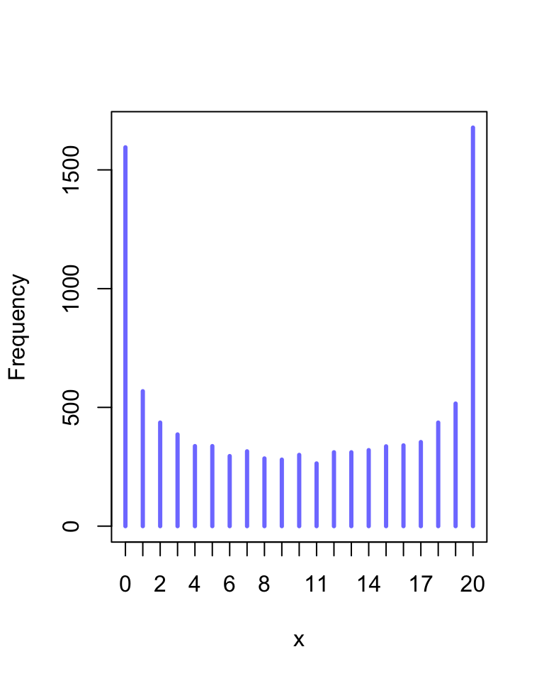
8.6.1 Pigs
The model shows a negative correlation between an increase in elevation and the probabilities of finding pig remains. This result was already suggested in the models with the geographical features as a predictor. In fact, although the variability increases at higher altitudes (due to the more restricted number of samples available), pig remains are more likely to be found in lowlands in all chronologies. The mean precision \(\bar\phi\) for the four chronologies is 5.41.
8.6.2 Cattle
If pigs showed a negative trend with increased elevations, cattle shows an opposite pattern. In every chronology, probabilities of finding cattle are much higher at high elevations. The Early Medieval and Medieval phases show the strongest association between higher elevations and a larger number of cattle NISP remains. However, the Medieval and Roman datasets do not include samples above 1.2km.

8.6.3 Caprine
The correlation between sheep/goats NISP and elevation is perhaps the most interesting when stratified by chronology. In the Roman and Late Roman phases, there is a positive correlation between altitude and the probability of finding caprine NISP, meaning that caprine are more likely to be found at high altitudes. However, in the Early Middle Ages, this trend diverges. The correlation begins to become negative, although not markedly, suggesting that there are changing trends. This trend becomes increasingly negative in 11th century sites. The mean precision \(\bar\phi\) for the four chronologies is 7.57.
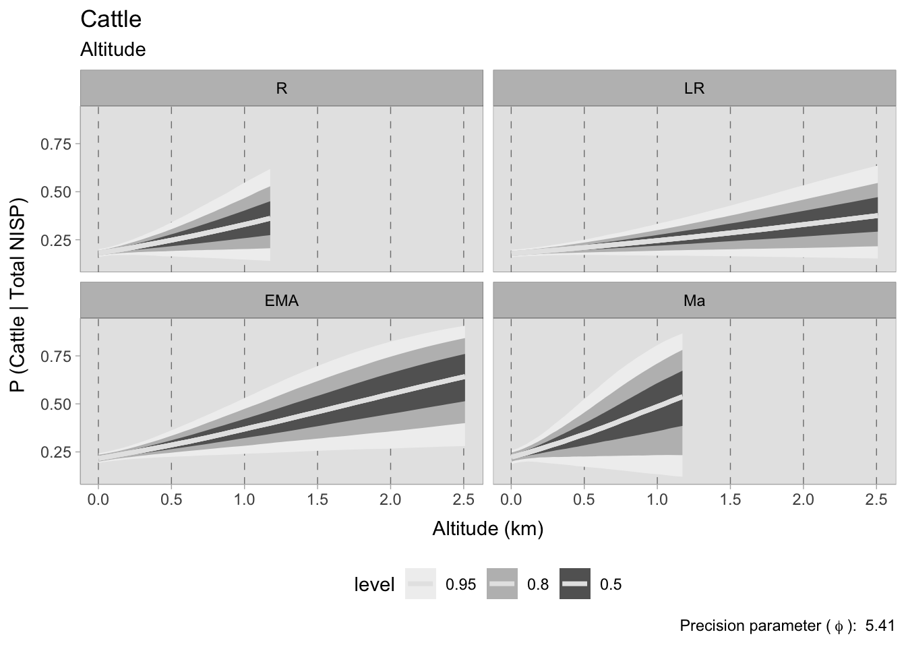
8.6.4 Edible W. Animals
In contrast, modeling the number of wild animal NISP remains against altitude was not very informative. The probability of occurrence of these species is always low, so elevation does not seem to be a major factor in their distribution. The prediction line appears to indicate no correlation, although if we include the 0.99 credible interval, the correlation is potentially positive in all chronologies. The model performed very poorly on 11th century sites, because not many sites reported wild animal remains and the credible intervals are quite wide. In other chronologies, the credible intervals are not very large and the overall mean precision parameter \(\bar\phi\) is 15.65, indicating that the data was not very dispersed.
8.6.5 Community plot
To examine the overall trends across all phases and different elevations, the probabilities of occurrence for the four animals were compiled and plotted against the slope coefficient (which in the models is multiplied by the elevation). The resulting plot shows probabilities of occurrence of each animal at different elevations. The horizontal dashed line represents the probability of finding each animal at sea level. It is worth reminding that these are separate models, and further research should explore other models, for instance multinomial models. In the Roman period, pigs were the most likely remains to be found, with probabilities ranging from 0.40 to 0.45. Most of the probabilities are negative, indicating a negative correlation with altitude. This suggests that pigs were more likely to be raised in lower-lying areas. Wild animals were also negatively correlated with altitude, but the correlation was not as strong as for pigs. Caprine and cattle were the second and third most common animal remains found, respectively. They were both positively correlated with altitude. In the Late Roman period, the probability of finding pig remains decreased to 0.35-0.34, while the probabilities of finding wild animal, caprine, and cattle remains remained more or less the same. This suggests that pigs may have become less common in this period. In the Early Medieval period, the probabilities of finding cattle and caprine remains increased to 0.17-0.26 and 0.26-0.34, respectively, while the probability of finding wild animal remains decreased to 0.05-0.10. Although cattle and caprine may have become more common in this period, pigs probabilities of occurrence did not change being still the most common species found in zooarchaeological samples. It is interesting to notice how in this period caprine probabilities are negatively correlated to the elevation of sites. This correlation becomes more markedly negative in the 11th century phase. In this last phase, there was increased variability in the probabilities of finding all four animal remains. This may be the result of a smaller amount of samples.
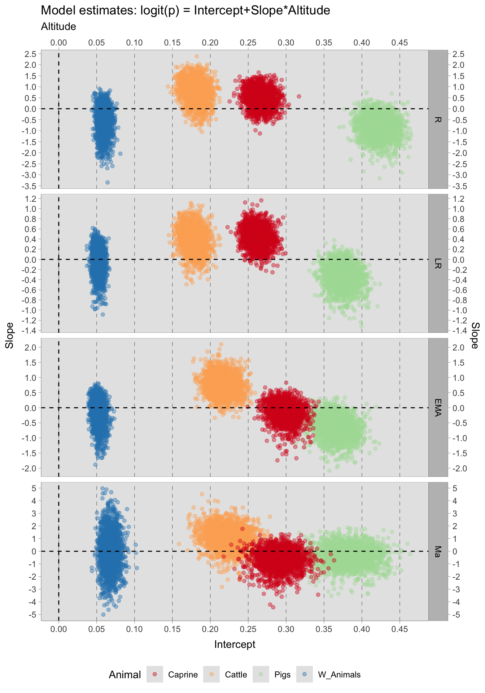